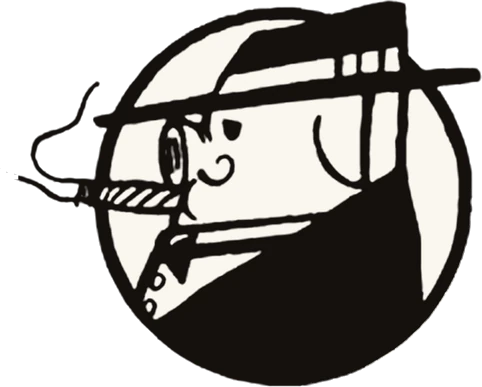

Benvenuti
今日のあなたに
ちょうどいい一杯を。
Il Calice del Giorno
今日のあなたに合う1杯を
8つの簡単な質問に答えるだけで、
あなたにぴったりの1杯を
ソムリエがご提案します。
まずはお好みを
Q{{ currentQuestionIndex + 1 }}. {{ currentQuestion.text }}
Birra alla Spina · Consegna Espressa
マルト水谷の
速達生ビールお届け中
おいしい注ぎ方のこだわり
- {{ pourSub > i + 1 || (pourSub === POUR_STEPS.length && i === POUR_STEPS.length - 1) ? '✓' : i + 1 }} {{ s.title }}{{ s.badge }} {{ s.text }}
{{ pourMessages[pourStage] }}
{{ pourMessages[pourStage] }}
IL TUO RISULTATO
{{ finalResult.shortDescription }}
{{ finalResult.description }}
そんなあなたにぴったりの1杯を
{{ rawProduct.variantTitle || 'お好みでお選びください' }}
そんなあなたにぴったりの
Il Calice del Giorno
本日の1杯
Sorpresa!
「？」の正体は… {{ drinkTheme.realName }} でした
{{ finalProduct.variantTitle || 'お好みでお選びいただけます' }}
＼{{ finalProduct.tagline }}／
{{ finalProduct.nameIt }}
{{ isPreparation ? 'ただいま厳選中' : productDisplayName }}（{{ variants[variantIndex].label }}）
{{ finalProduct.recipe }}
{{ finalProduct.price }}（税込）
「{{ finalProduct.catch }}」
- {{ k }}
{{ finalProduct.description }}
Puntiここがおいしい
- {{ ['I', 'II', 'III'][i] }} {{ pt }}
Birra Speciale
マルト水谷の速達生ビール
-
{{ k.num }}
{{ k.title }}
{{ k.text }}
飲んだあとのグラスに残る泡の輪「天使の輪」が、おいしい本物の生ビールの証。ぜひ確かめてみてください。
Gusto味わい
Abbinamento合わせたい料理
- {{ item }}
{{ finalProduct.trivia }}
Menùこちらもどうぞ
- {{ m.name }} {{ m.note }} {{ m.price }}
{{ finalResult.titleRuby }}タイプのあなたにぴったりの1杯を、
ただいまソムリエが厳選しております。
どうぞお楽しみに。
Buon appetito!